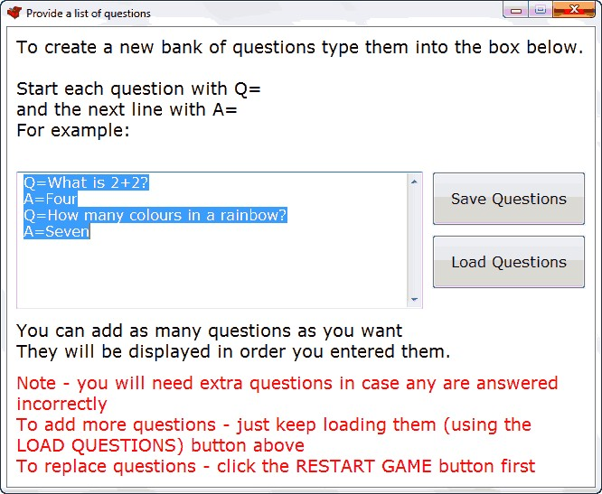

To create questions for:
Blockbusters
Cathphrase
Connect 4
Deal or No Deal
Flash Cards
Naughts and Crosses
Random Question Display OR
Weakest Link
You will see a screen like this:

Type in the box, using:
Q=
before the question, immediately followed by:
A=
with the answer.
Then SAVE the questions.
Note - you can save them in your own personal folder, or onto a departmental network folder so all your department can access them.
Once you have a set of SAVED questions, click LOAD QUESTIONS and open the questions you have saved.
The same bank of questions can be loaded into any of the games listed at the top of this page.
Also - during the game, you can load in more questions (for example from different topics or different difficulties) whenever you like.
Top tip:
You can save banks of questions on a range of different topics and at a range of different levels.
By continually clicking "Load Questions" you can mix and match the questions loaded into the game.
This means each game can be personalised to your class' needs and abilities.
Top tip 2:
Always check the layout of your questions and answers before using them with a class.
If you want a line-break, use this tag:
_#_
For example:
What is:_#_4 + 2?
Would be displayed as:
What is:
4 + 2?